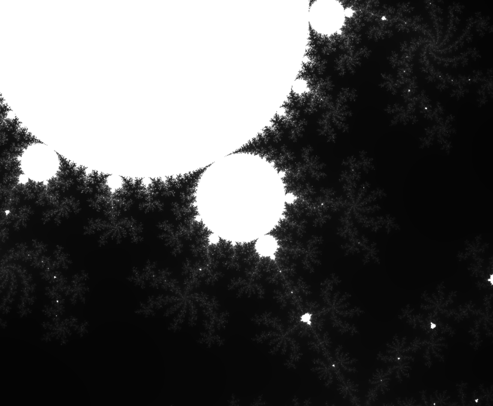
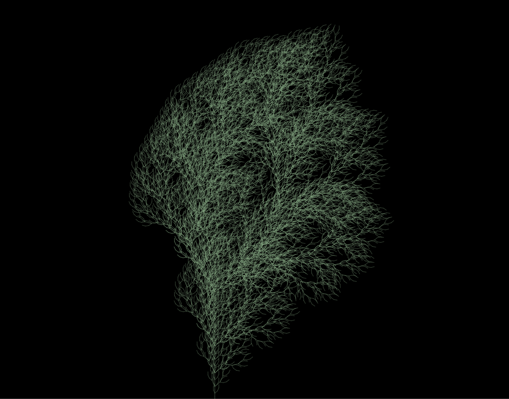

Professional summary
I'm a data engineer and analyst with a PhD in mathematics. I drive data-focused decision making, build analytics pipelines and tooling for Amberside Management Solutions - a renewable energy asset management company. On the side I make interactive visualisations of maths and physics, build simulations and work on AI/ML side projects.
Experience
-
Data Engineer & Analyst — Amberside Management Solutions
2024 – present
Solar and battery storage asset management company.
- Built ELT pipelines (Python, SQL, Airflow) ingesting generation and meter data from third-party APIs into the internal warehouse.
- Led development of automated data processing workflows for generating daily, weekly and monthly reports.
- Developed and maintained a data platform for tracking and analysing asset performance, using Python, SQL and Svelte.
-
Data Engineer & Analyst — Amberside Energy
2023 – 2024
Renewable-energy developer focused on solar and battery storage.
-
Data Science Intern — Twinkl
2023
Educational resource platform for teachers and students.
-
Data Engineering Consultant — Xander Talent
2023
Graduate consultancy that trains and places technical consultants with client companies across data, engineering and software roles.
-
Career transition — academia to data
2020 – 2023
Retrained from pure mathematics into CS, Data and ML/AI topics through structured courses, self-study and hands-on portfolio work.
- Worked through the IBM Data Science Professional Certificate (Coursera), MIT's Introduction to Computer Science (OCW), and Stanford's Machine Learning course — lectures paired with the accompanying problem sets.
- Built a self-taught stack in Python, SQL, JavaScript, pandas and D3.js, applied throughout the interactive simulations and visualisations on this site.
- Sustained algorithms and data-structures practice via AlgoExpert.
- Continued teaching alongside retraining: ACT/SAT tutoring at Huntington Learning Center (2021) and freelance maths tutoring.
-
Lecturer — UC San Diego
2019 – 2020
Taught multivariable and vector calculus to undergraduate cohorts; some of the interactive visualisations on this site originated as teaching aids for those classes.
Education
PhD in Mathematics
University of California, San Diego · 2013–2019
Specialisation: Algebraic Number Theory, non-Archimedean Functional Analysis, p-adic Lie Groups.
Thesis: A Tannaka–Krein Theorem for Profinite Groups.
A generalisation of the classical Tannaka–Krein duality Theorem for compact groups to profinite groups — Answers the question: Can we recover the algebraic structure of a profinite group from its Banach space representations. Short answer: Yes.
MASt in Mathematics (Part III)
University of Cambridge
BSc in Mathematics
University College London
Skills
Languages
 Python
Python SQL (Postgres)
SQL (Postgres) SQL (MySQL)
SQL (MySQL) JavaScript
JavaScript Java
Java
Data & analytics
 pandas
pandas- NumPy
- Jupyter
- D3.js
Engineering & tooling
 Git
Git Docker
Docker Flask
Flask HTML
HTML CSS
CSS Bootstrap
Bootstrap LaTeX
LaTeX
Familiar with
Used for specific projects but not day-to-day.
 TensorFlow
TensorFlow React
React MATLAB
MATLAB- Processing
 Blender
Blender
Selected projects
A small set of interactive visualisations and experiments. Full catalogue in the site nav.

Self Driving Car
A self driving car simulation using a neural network coded without any machine learning libraries.

Steering behaviour
Particles with desired/steering/flee forces reconstructing text, with a repulsive force from the mouse.

Curves in space
Interactive 3D renderings of parametric curves from multivariable calculus.

Mandelbrot set
WebGL-accelerated deep-zoom into the Mandelbrot fractal, with palette controls.

Perlin noise field
Thousands of particles advected by a smoothly-varying 3D Perlin noise vector field.

Vector fields
Particle tracers revealing the structure of selected 2D vector fields.

L-systems
Generative plant forms produced by context-free string-rewriting grammars.

Search algorithms
Pathfinding on a grid: BFS, DFS, Dijkstra, and A* with customisable heuristics.
Outside work
Miscellaneous interests.
- Mountaineering
- Kittens
- Succulents
-

Climbing — French Alps